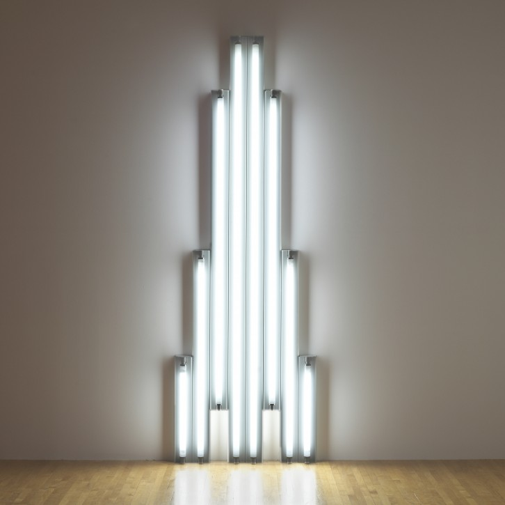

Dan Flavin

Dan Flavin (April 1, 1933 – November 29, 1996) was an American minimalist artist famous for creating sculptural objects and installations from commercially available fluorescent light fixtures.